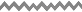

Cebu Frill-Wing
Cebu Frill-Wing

It is a critically endangered damselfly endemic to Cebu, found only in a small river threatened by habitat loss and pollution.
Learn More

Luzon Peacock Swallowtail
Luzon Peacock Swallowtail
It is an endangered butterfly endemic to Luzon, known for its golden-green scales and long, narrow wing tails.
Learn More

Palawan Purple Crab
Palawan Purple Crab
It is a purple-colored freshwater crab endemic to Palawan, possibly using its iridescence for species recognition.
Learn More